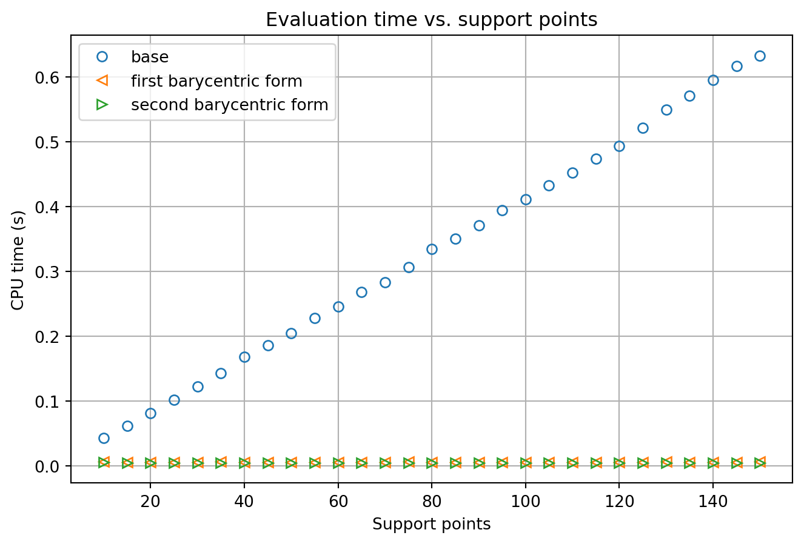

Code
import numpy as np
import numpy.typing as npt
from matplotlib import pyplot as plt
import time
from random import random\[ \newcommand{\mcal}[1]{\mathcal{#1}} \newcommand{\bb}[1]{\mathbb{#1}} \newcommand{\mbf}[1]{\mathbf{#1}} \newcommand{\ol}[1]{\overline{#1}} \newcommand{\emp}{\varnothing} \]
Let \(\Pi_n\) denote the space of real or complex polynomials of degree at most \(n\). Lagrange interpolation gives an exact answer to the interpolation problem with arbitrary prescribed support points:
The utility of Lagrange interpolation breaks down as follows:
Advantages:
Lagrange interpolation provides a clean theoretical result guaranteeing the existence of a unique interpolating polynomial. It is thus sometimes called upon when interpolation is used as an intermediary step in the theory of other numerical algorithms.
The dependence of \(P(x)\) on the support ordinates \(f_j\) is simple and linear, which makes it convenient for solving multiple interpolation problems with a shared set of support abcissae \(x_j\) but varying ordinates.
Disadvantages:
Lagrange interpolation is ill-suited for calculations involving large numbers of support points. Evaluating the Lagrange interpolant requires evaluation of the basis polynomials \(L_j\), which requires many multiplications.
If the support points are changed, the polynomial has to be calculated from scratch. However, rewriting the Lagrange interpolant in barycentric form can reduce the number of required computations when the set of support points is changed by the addition of a new point, as we will describe shortly.
Polynomial interpolation is fundamentally a linear algebra problem. Given support points \((x_j,f_j)\), solving for \(P\in \Pi_n\) with \(P(x_j) = f_j\) amounts to solving the system \[ \begin{aligned} a_0x_0^0 + a_1x_0^1 + \cdots + a_nx_0^n &= f_0,\\ a_0x_1^0 + a_1x_1^1 + \cdots + a_nx_1^n &= f_1,\\ &~~~\vdots\\ a_0x_n^0 + a_1x_n^1 + \cdots + a_nx_n^n &= f_n \end{aligned} \] for the coefficients \(a_0,\ldots,a_n\). Converting to matrix form, this can be written as \[ \begin{pmatrix} 1 & x_0 & x_0^2 & \cdots & x_0^n\\ 1 & x_1 & x_1^2 & \cdots & x_1^n\\ \vdots & \vdots & \vdots & \ddots & \vdots\\ 1 & x_n & x_n^2 & \cdots & x_n^n \end{pmatrix} \begin{pmatrix} a_0\\ a_1\\ \vdots\\ a_n \end{pmatrix} = \begin{pmatrix} f_0\\ f_1\\ \vdots\\ f_n \end{pmatrix}. \] The matrix on the LHS is the well-known Vandermonde matrix. The solution of the interpolation problem amounts to inverting this matrix (which also establishes existence and uniqueness, which is conditional on \(x_j\neq x_k\), \(j\neq k\).)
Inverting the Vandermonde matrix is an expensive operation, especially as the number of support points \(n\) grows large. Lagrange interpolation avoids this with a change of basis. The Vandermonde matrix arises because we are considering the interpolation problem over the monomial basis \(\{1,x,\ldots,x_n\}\) of \(\Pi_n\). By replacing this basis with the Lagrange basis \(\{L_0,\ldots,L_n\}\), and using that \(L_j(x_k) = \delta_{jk}\), we can write the system \(P(x_j) = \sum_k b_k L_k(x_j) = f_j\) as \[ \begin{aligned} b_0 L_0(x_0) = b_0 &= f_0,\\ b_1 L_1(x_1) = b_1 &= f_1,\\ &~~~\vdots\\ b_n L_n(x_n) = b_n &= f_n. \end{aligned} \] In matrix form we find that \(I\mbf{b} = \mbf{f}\), with \(\mbf{b} = (b_0,\ldots,b_n)\), \(\mbf{f} = (f_0,\ldots,f_n)\). That is, we have effectively pre-inverted the Vandermonde matrix using our choice of basis. The cost is that our basis polynomials are significantly more complicated than the monomial basis.
The Lagrange basis polynomials have the following convenient property:
We now consider the problem of adding a new point \((x_{n+1},f_{n+1})\) to the set of support points. To compute the Lagrange interpolant from scratch with the given formula would be an expensive endeavor, as we would need to compute each \(L_j\) using the updated set of support points. However, we can reduce the computational burden of the update by rewriting the Lagrange interpolant in barycentric form.
First, we fix the support abcissae \(x_0,\ldots,x_n\). We observe that the Lagrange basis can be written in the following form: \[ L_j(x) = \prod_k (x-x_k) \cdot \frac{\prod_{k:k\neq j} (x_j-x_k)^{-1}}{x-x_j} = \ell(x)\frac{w_j}{x-x_j}, \] where \[ \ell(x) = \prod_j (x-x_j), w_j = \prod_{k:k\neq j} (x_j-x_k)^{-1}. \]
We can therefore write \[ \sum_j f_j \prod_{k:k\neq j} \frac{x-x_k}{x_j-x_k} = \ell(x)\sum_j f_j\frac{w_j}{x-x_j}. \]
If the barycentric weights \(w_j\) are pre-computed, then the first barycentric form can be updated to accommodate a new support point \((x_{n+1},f_{n+1})\). The update steps go as follows:
\(\ell(x)\) is updated by multiplying a factor of \((x-x_{n+1})\).
For \(j=0,\ldots,n\), \(w_j\) is updated by dividing the factor \((x_j-x_{n+1})\).
The \(j=n+1\) term is appended to the summation.
This update therefore costs \(\mcal{O}(n)\) operations.
The first barycentric form also improves on the number of flops needed to evaluate the Lagrange polynomial. Evaluating \(L_j(x)\) from its definition requires \(\mcal{O}(n)\) multiplications, and therefore evaluating the original form of the Lagrange polynomial requires \(\mcal{O}(n^2)\) operations. But assuming that the barycentric weights are pre-computed and stored, evaluating the first barycentric form requires only the multiplication of \(\ell(x)\) and the evaluated summation, which gives \(\mcal{O}(n)\) multiplications.
A further transformation can be used to reduce the cost of evaluation even further. We write \[ 1 = \sum_j L_j(x) = \ell(x)\sum_j \frac{w_j}{x-x_j}, \] and divide the first barycentric form through by this expression, which cancels the \(\ell\) factor and yields the following:
One advantage of the second barycentric form is that it eliminates the evaluation of \(\ell(x)\) altogether. The evaluation of the second barycentric form requires \(\mcal{O}(n)\) multiplications and \(\mcal{O}(n)\) additions. Moreover, the appearance of \(w_j(x-x_j)^{-1}\) in both the numerator and denominator helps to avoid the occurrence of catastrophic cancellation when \(P(x)\) is evaluated at a value of \(x\) close to a node \(x_j\).
We now showcase some numerical examples of Lagrange interpolation in action.
import numpy as np
import numpy.typing as npt
from matplotlib import pyplot as plt
import time
from random import randomdef lagrange_polynomial(X: npt.NDArray[np.float64], F: npt.NDArray[np.float64]):
def poly(x):
L = np.ones(len(X))
for j in range(len(X)):
L[j] = np.prod(np.divide(x-X, X[j]-X, out=np.ones(len(X)), where=X!=X[j]))
return np.dot(F,L)
return polyX = np.linspace(-5,5,7)
F = np.exp(-np.square(X))
P = lagrange_polynomial(X,F)
T = np.linspace(-5.1,5.1,200)
y = [P(t) for t in T]
plt.plot(T, np.exp(-np.square(T)), label='exp(-x^2)')
plt.plot(T, y, label='Interpolated')
plt.plot(X, F, 'o', label='Support points')
plt.title('Lagrange interpolation for f(x) = exp(-x^2)')
plt.xlabel('x')
plt.ylabel('y')
plt.grid()
plt.legend()
plt.show()
Our first example implements the original Lagrange interpolation formula. We sample \(7\) evenly spaced points from the function \(e^{-x^2}\) on the interval \([-5,5]\) and plot the degree-\(6\) Lagrange interpolant. We see that the Lagrange interpolant performs reasonably well in the interior of the interval, but produces large errors as we move toward the edges of the interval. Outside the interval containing the support points, the error diverges to \(\infty\).
T = np.linspace(-5.1,5.1,200)
plt.plot(T, np.exp(-np.square(T)), label='exp(-x^2)')
for N in range(5,15,4):
X = np.linspace(-5,5,N)
F = np.exp(-np.square(X))
P = lagrange_polynomial(X,F)
y = [P(t) for t in T]
plt.plot(T, y, '--', label='Degree {deg}'.format(deg=N-1))
plt.title('Approximation accuracy vs. support points')
plt.xlabel('x')
plt.ylabel('y')
plt.grid()
plt.legend()
plt.show()We compute multiple Lagrange interpolants to see if increasing the number of support points helps. Unfortunately, we actually observe the opposite: although the approximation improves in the center of the interval, near the edges the approximation worsens as we increase the number of support points.
This is, in fact, a problem that is generic to polynomial interpolation, and is known as Runge’s phenomenon. We will explore it in more detail in a following section. For now, we leave the reader with the following warnings regarding the practical application of polynomial interpolation:
def barycentric_weights(X: npt.NDArray[np.float64]):
W = np.ones(len(X))
for j in range(len(X)):
W[j] = 1 / np.prod(X[j]-X, where=X!=X[j])
return W
def first_barycentric(X: npt.NDArray[np.float64], F: npt.NDArray[np.float64]):
W = barycentric_weights(X)
def poly(x):
return np.prod(x-X) * np.dot(F, np.divide(W, x-X, out=np.copy(F), where=x!=X))
return poly
def second_barycentric(X: npt.NDArray[np.float64], F: npt.NDArray[np.float64]):
W = barycentric_weights(X)
def poly(x):
return np.dot(F,np.divide(W, x-X, out=np.copy(F), where=x!=X)) / np.sum(np.divide(W, x-X, out=np.copy(F), where=x!=X))
return polyminPoints = 10
maxPoints = 151
step = 5
numTrials = 500
sptPts = np.arange(minPoints, maxPoints, step, dtype=int)
base_time = np.empty(0, dtype=float)
for N in sptPts:
X = np.linspace(-5,5,N)
F = np.exp(-np.square(X))
P = lagrange_polynomial(X,F)
st = time.process_time()
for i in range(numTrials):
P(random())
et = time.process_time()
base_time = np.append(base_time, et-st)
first_bary_time = np.empty(0, dtype=float)
for N in sptPts:
X = np.linspace(-5,5,N)
F = np.exp(-np.square(X))
P = first_barycentric(X,F)
st = time.process_time()
for i in range(numTrials):
P(random())
et = time.process_time()
first_bary_time = np.append(first_bary_time, et-st)
second_bary_time = np.empty(0, dtype=float)
for N in sptPts:
X = np.linspace(-5,5,N)
F = np.exp(-np.square(X))
P = second_barycentric(X,F)
st = time.process_time()
for i in range(numTrials):
P(random())
et = time.process_time()
second_bary_time = np.append(second_bary_time, et-st)
plt.plot(sptPts, base_time, 'o', fillstyle='none', label='base')
plt.plot(sptPts, first_bary_time, '<', fillstyle='none', label='first barycentric form')
plt.plot(sptPts, second_bary_time, '>', fillstyle='none', label='second barycentric form')
plt.title('Evaluation time vs. support points')
plt.xlabel('Support points')
plt.ylabel('CPU time (s)')
plt.grid()
plt.legend()
plt.show()
Lastly, we test the speed of evaluation of the Lagrange polynomial for the three formulas we have provided. We use the three formulas to compute \(P(x)\) for evenly spaced support points numbering from \(10\) to \(150\), and compute the time each formula takes to evaluate \(P(x)\) for \(500\) uniformly random values of \(x\) in \([0,1]\). We find that using the original formula for Lagrange interpolation incurs a fairly significant running time penalty as the number of support points grows, while the first and second barycentric formulas manage to maintain consistent running times.